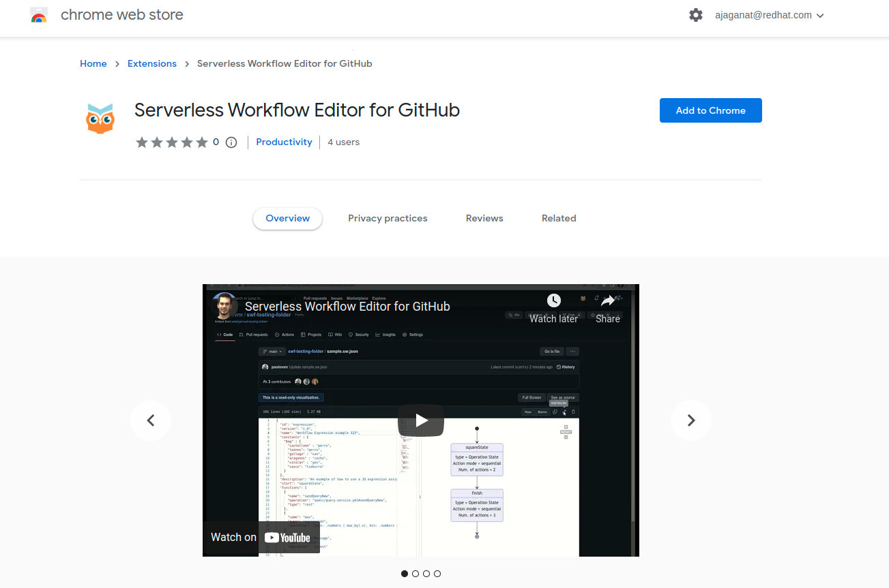

Chrome GitHub extension for Serverless Workflow editor
The Google Chrome extension for the Serverless Workflow editor enables you to view and edit CNCF Serverless Workflow specification files in GitHub.
This document describes how to install and use the Chrome GitHub extension for Serverless Workflow editor.
Installing the Chrome GitHub extension for Serverless Workflow editor
You can install the Chrome extension for the Serverless Workflow editor to view and edit the workflow specification files in GitHub.
-
Google Chrome is installed.
-
You can install the Chrome extension using one of the following methods:
-
Go to Chrome web store: Go to the Serverless Workflow Editor for GitHub extension page in Chrome web store and click Add to Chrome.
Figure 1. Serverless Workflow Chrome extension page -
Download the ZIP file:
-
Download and extract the
chrome_extension_serverless_workflow_editor_VERSION.zipfile from the kie-tools releases page in GitHub. -
Go to Customize and control → Settings → Extensions → Load unpacked in the upper-right corner in Chrome.
-
Open the extracted
distfolder.
The Chrome extension for Serverless Workflow editor is successfully installed.
-
-
Using the Chrome GitHub extension for Serverless Workflow editor
After installing the Chrome extension for the Serverless Workflow editor, you can use the editor to edit and view the workflow files in GitHub.
-
You have installed the Serverless Workflow editor extension in Chrome.
For more information, see Installing the Chrome GitHub extension for Serverless Workflow editor.
-
Create a workflow file (
.sw.jsonor.sw.yaml). -
Push the created workflow file to GitHub, or you can go to the GitHub page and click on the workflow file to open in the editor.
 Figure 2. Serverless Workflow file in GitHub
Figure 2. Serverless Workflow file in GitHubThe Serverless Workflow editor opens in read-only mode.
-
To change the read-only mode to edit mode, click the pencil icon on the top-right corner of the screen.
-
You can switch to the full-screen mode. Also, you can hide the editor and view the source code using See as source button.
-
Make changes to the source code, add a commit message.
You can either commit the changes to a branch directly or create a new branch for pull request.
Found an issue?
If you find an issue or any misleading information, please feel free to report it here. We really appreciate it!